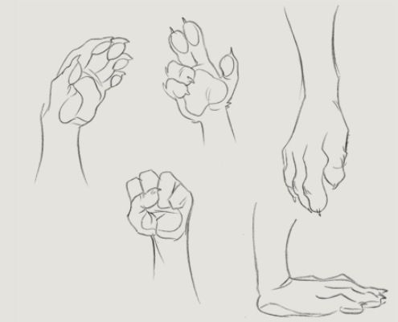
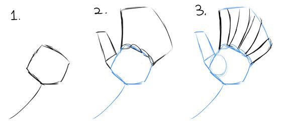
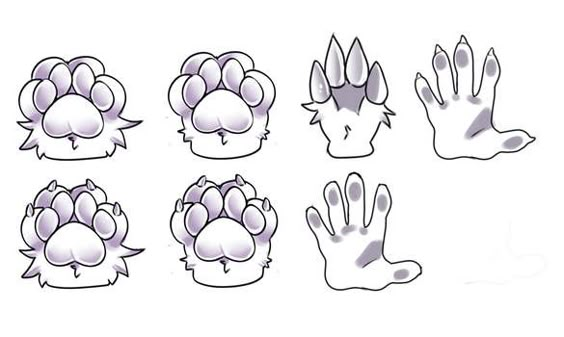
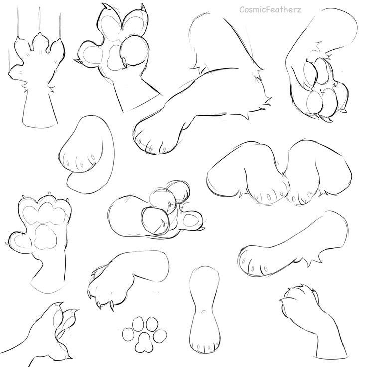
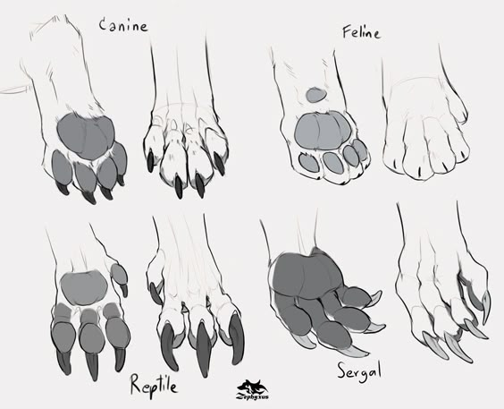

Descrição da Seção
O objetivo dessa seção e fazer você melhorar seu desenho de braços e patas.
Exemplos
Desenhe todos os desenhos dos exemplos para treinar.
- 
- 
- 
- 
- 
* Inicie com formas básicas, como cilindros ou retângulos, que representem a estrutura dos braços e patas. Lembre-se de considerar a articulação dos cotovelos e joelhos, que costumam ser mais arredondadas, e ajuste as formas para refletir a pose do personagem. Nos braços, você pode adicionar detalhes como músculos e pelagem, utilizando linhas curvas para criar textura e movimento. Nos pés, desenhe garras ou patas de acordo com o tipo de animal, garantindo que as formas estejam de acordo com a anatomia.